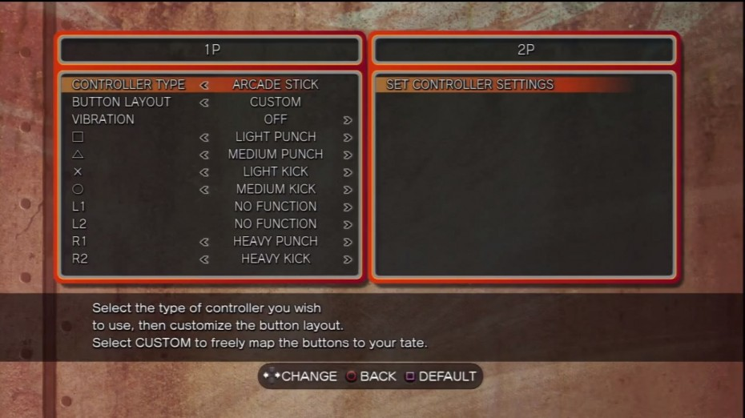
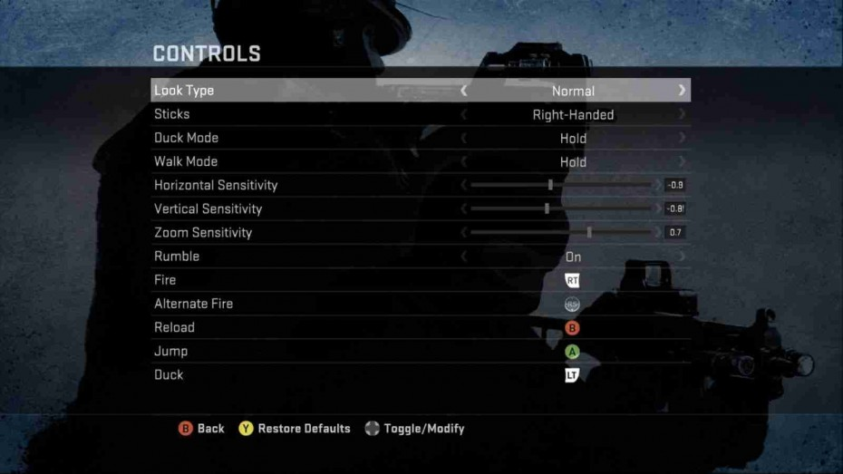
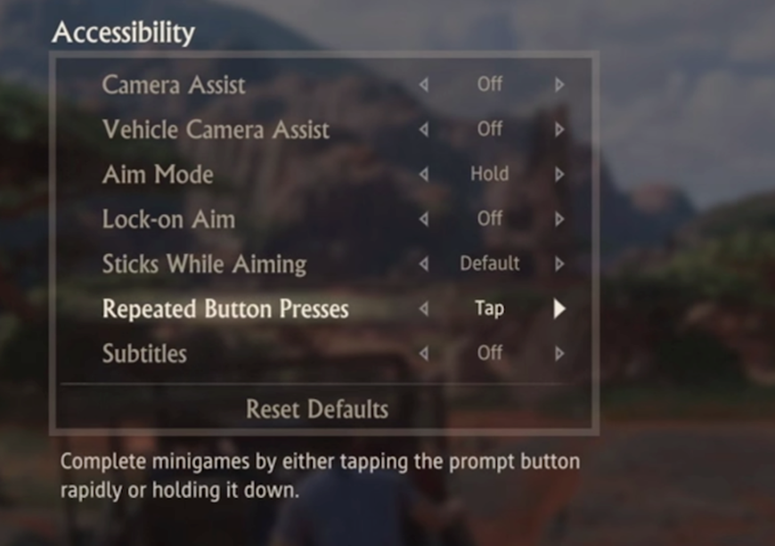
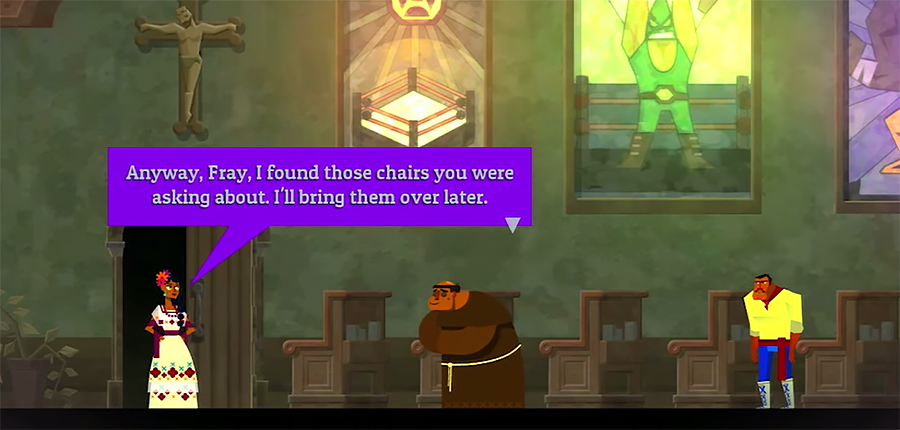
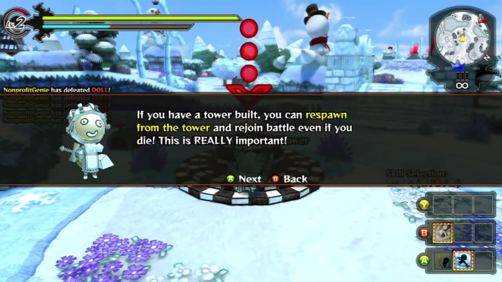
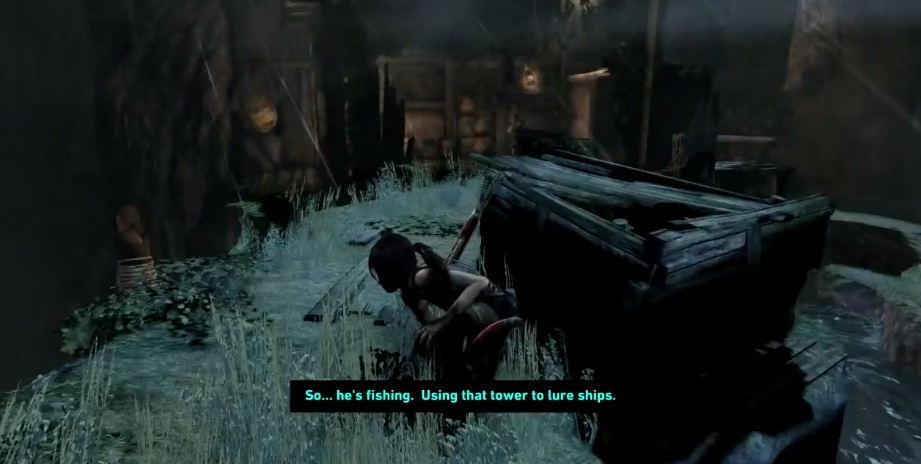
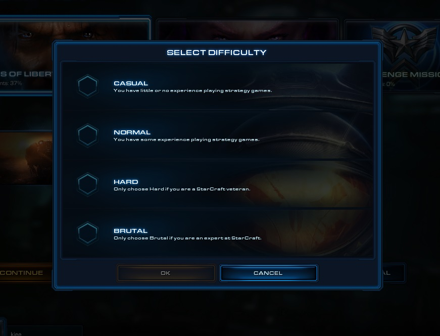

Les bonnes pratiques pour concevoir un jeu accessible
Un site de bonnes pratiques pour améliorer l'accessibilité dans les jeux a été mis en ligne, ce dernier est rédigé par un groupe de designers et de développeurs bénévols, il est consultable gratuitement via le lien Game Accessibility Guidelines et nous donnerons ci-dessous quelques exemples
Pouvoir réaffecter les touches
Il est important de laisser les joueurs reconfigurer les touches. Non seulement cela permet aux joueurs traditionnels de jouer convenablement, mais c'est aussi très utile pour les joueurs en situation de handicap de pouvoir adapter le jeu selon ses capacités.
Avoir la possibilité d'ajuster la sensibilité
C'est un paramétrage essentiel dans les jeux de nos jours, car le sensibilité de mouvement varie d'une personne à l'autre, et c'est autant plus vrai pour les joueurs en situation de handicap, notamment des joueurs ayant des handicaps moteur.
Fournir des alternatives compte tenu des spécificités des joueurs
De nos jours, on a des joueurs en situation de handicap qui ont chacun leur propre spécificité, leurs prores capacités. Par exemple, pour un joueur dont ses mains tremblent constamment, il faudra trouver une alternative d'interaction. Un très bon exemple est donné par le jeu "uncharted", dans ce dernier, la fonction "appuyer longement" peut être remplacée par "Plusieurs appuies successives".
Avoir une police de texte lisible et proposer d'autres choix
Cette fonctionnalité est souvent manquante dans les jeux vidéo actuels. Dans la plupart du temps, le joueur ne peut que jouer avec la police de texte par défaut. C'est pourquoi il est important d'avoir une police de texte par défaut lisible et de proposer d'autres polices, notamment pour les joueurs dyslexiques.
Avoir un contraste élévé entre le texte et le fond d'écran
Tout comme la recommandation pour un site web, il est aussi important d'afficher les textes dans un fond avec un contraste élevé pour aider des joueurs malvoyants à profiter le jeu.
Avoir les sous-titres pour les cinématiques
Les sous-titres pour les cinématiques sont primordials, non seulement ils permettent aux joueurs qui jouent dans une langue étrangère de comprendre les scénarios, mais ils aident aussi les malentendants à suivre le l'évolution du jeu. Tout comme le critère sur le contraste, les sous-titres doivent être affichés sur un fond à contraste élevé.
Pouvoir choisir la difficulté
Il est très intéressant de pouvoir choisir la difficulté en jeu. Il permet aux joueurs d'évoluer progressivement dans le jeu. Mais aussi, cela permet aux personnes ayant des déficiences intellectuels à suivre convenablement le jeu.
